.ART Award 2026 · the work behind the work
I build by layering.
I build films, performances, and translations by layering archival images, staged bodies, and borrowed interfaces. These five projects open up the source material, compositing choices, narrative structures, and research behind the work.
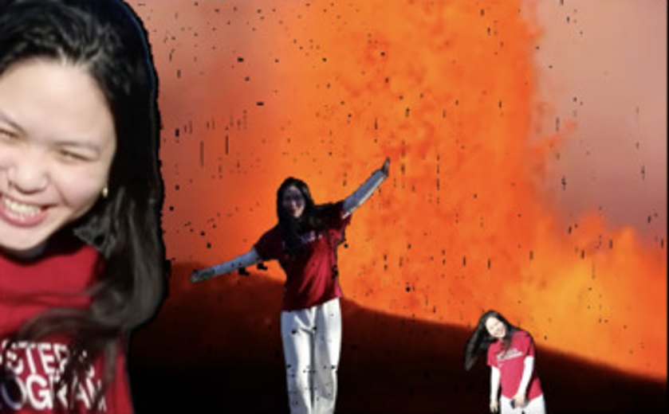
"fruit"
found-footage film · 20262026 · 3:24 · Director, editor · archival found footage with green-screen performance
Watch film · 3:24 ↗Password-protected screener · viewing password required.
"fruit" is an archival film about existence as a blip in the matrix, nature as insurmountable, and the nihilist certainty that everything is as it should be. I green-screened myself — small, vaping — over a torrent of borrowed footage: the 1927 silent exploitation film Is Your Daughter Safe?, the instructional documentary "The Growth of Plants," a nuclear mushroom cloud, Barney, a cosmic tardigrade — all under Werner Herzog's monologue from Burden of Dreams (1982) on the misery of the jungle. I composite my own filmed performance into borrowed footage; the compositing is the argument — the human as a tiny, unbothered blip in an overwhelming, amoral nature.
Werner Herzog's Burden of Dreams (1982) monologue over borrowed footage — borrowed images, my performance, and the composite frame
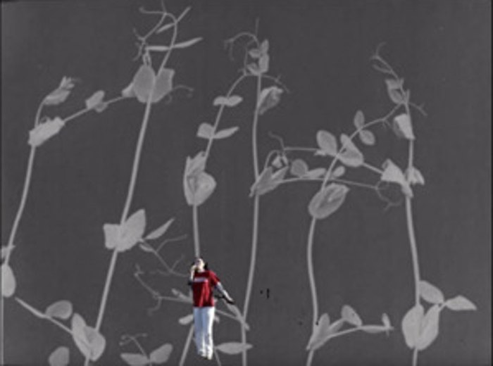
An instructional documentary — stems climbing, seeds splitting open in time-lapse. I am composited in, small and in red, standing under the growth.
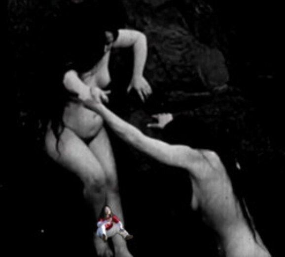
A silent exploitation film — the "obscenity" and "fornication" Herzog narrates, lifted whole and run underneath him.
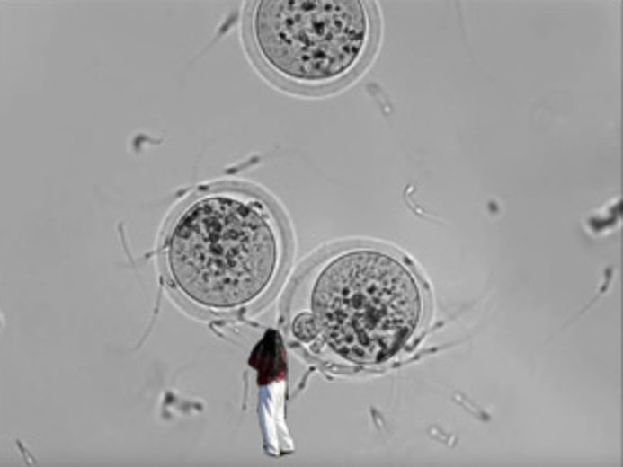
Cells under glass, the egg and the sperm. Creation at the scale where it looks like weather, not miracle.
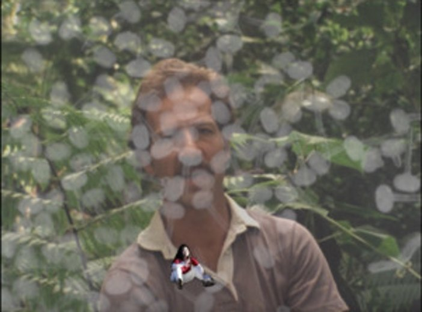
His face from Burden of Dreams dissolved into the leaves — the human body made a plant body, the monologue's spine made literal.
A real eruption. I dance over the disaster, doubled, unbothered — the nihilist shrug the whole film rides on: everything is as it should be.
Ready Mermaid One
live-action film · videogame form2026 · 3:29 · Writer, director, performer · live-action film staged as a point-and-click game · color, sound
Watch film · 3:29 ↗Password-protected screener · viewing password required.
Ready Mermaid One is a choose-your-own-adventure short where the player directs a mermaid until she starts fighting back — the form (a game) and the question (whose body is this?) are the same thing. Here is the map of what you choose, and what each choice is actually about.
▸ a walkthrough of the branches — you pick, the mermaid obeys
"I think I just became the main character"
A real mermaid on a beach. A cursor, a facecam of the player — me, at a desk — and three options appear:
She sings — 今生缘
The song I picked is 今生缘 ("This Life's Bond") by Chuan Zi 川子 — a weepy mainland folk-rock karaoke standard, the kind of sentimental hit every family knows. I chose it partly because it's a viral audio — the sound bed a certain kind of earnest online performance is built on. She performs it, karaoke-captioned, for an audience she can't see: nostalgic, earnest, consumable.
"Oh boy, that was exhausting. Feed me!"
beach ⇄ road
Move her to a gravel road and she can't walk — she drags herself along the ground. −15 health−20 health "Take me back. I said, take me back."
*throws the can at the camera
Back on the beach, she turns on the player: "My mother is the earth, my father is the sea. What have you done to the earth, to the sea?" — "It's just a game." — "For who?"
Sunset — yes / no
"No. I don't want that. You can stop. You can—" She refuses the one choice that would end it on your terms.
GAME OVER
The screen flips mirror-reversed. The POV reverses — the player becomes the mermaid.
It's choose-your-own-adventure because consent is the mechanic. The health bar is a body being spent for an audience; the song, the food, the relocations are all things done to her for points. The chat is streaming culture itself — "Chat says — who is chat? Why are you listening to them?" She is a woman performing herself until she refuses, and when the game ends you don't win: you become her. You were always playing yourself — part of the institution you thought you were running.
The Body, Nood
moving-image collage · 20262026 · 6:32 · Writer, director · moving-image collage
Watch film · 6:32 ↗Password-protected screener · viewing password required.
The Body, Nood is a narrative short about my alter ego metamorphosing into a noodle. Rather than treating the body as a container for the self, it imagines the body as a continuation of the world — collapsing categories usually kept apart: body and landscape, pleasure and disgust, self and environment. The collage intercuts my own footage with found war and cinema clips, archival immigration film, and food macros until the woman and the noodle are the same material.
what it's cut from — images, cuts, and dialogue
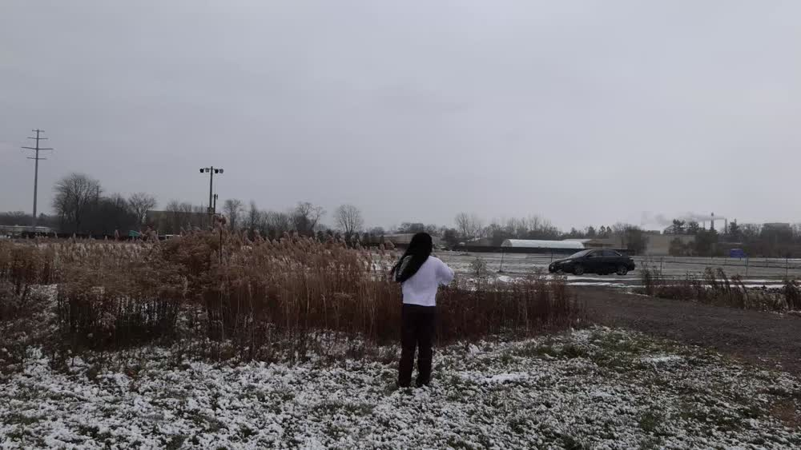
A lone figure in a wide winter wheat field, noodles in hand — the body set into the world before anything is done to it.
People eating at a picnic, the frame tightening until we are watching them through a sniper's scope — then a smash-cut to a Spielberg-scale blockbuster: the sniper fires. A subtitle floats up, "There weren't supposed to be hostiles that close." To look at someone, the cut argues, is already to take aim.
Archival footage of Chinese immigration at Angel Island, San Francisco — the West-Coast station where arriving Chinese were detained, examined, catalogued. Bodies inspected and held.
A ramen-shop kitchen; noodles lifted steaming from a bowl. Itami's Tampopo threaded through — where food is appetite, ritual and comedy at once.
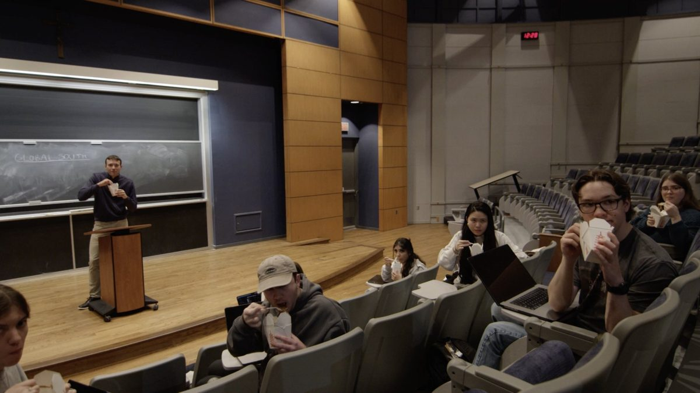
Under GLOBAL SOUTH chalked on the board, an entire seminar — lecturer at the podium, students in the seats — eats takeout noodles and turns, as one, to face the camera. The subject is being studied; the room studies back.
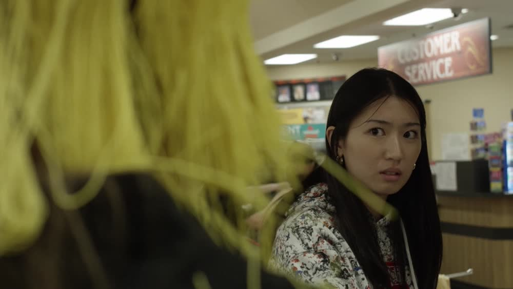
At the checkout, a clerk with konjac noodles hanging from her own mouth asks: "No bing chilling for you?" — then, "Do you speak English?" John Cena first said 冰淋淋 ("ice cream") in good faith, an actor genuinely trying to learn Mandarin — and it curdled into a meme that people of his own background then used to mock Asian creators across Instagram and TikTok. That turn is the film's hinge: a sincere crossing-over, repackaged as a bit to perform at Asian people. To be read as Chinese becomes to be read as consumable.
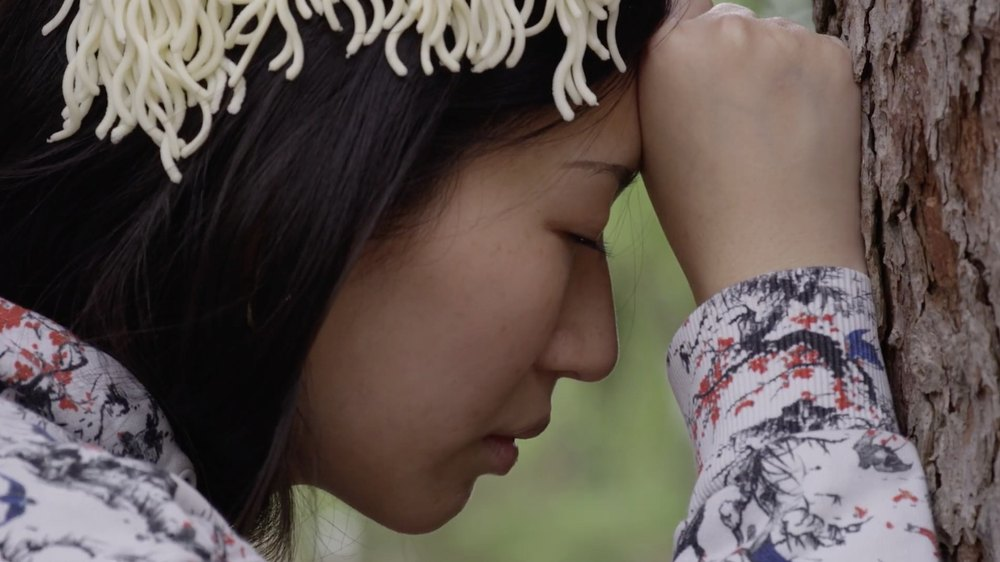
Her hair becomes yellow noodle; forehead to tree trunk, the body dissolves back into the field it began in. She never says the clerk's line — she becomes the noodle. Woman, noodle and world are finally one material.
The Paper Haven
archival exhibition in development · researchCurator and researcher · 76 archival documents and photographs · physical exhibition in preparation
An exhibition in development, built from research on Jewish refugees in wartime Shanghai — David Ludwig Bloch's woodcuts, photographs of the Hongkew ghetto, the visas issued by the diplomat Ho Feng-Shan, a refugee's passport — and the question of who gets to keep a history. The process here is spatial. The overhead diagram presents a proposed arrangement of the archival material; it is a conceptual layout, not documentation of an installed exhibition.
Until August 1939, Shanghai was the only port in the world where a refugee could land without a visa — no single authority controlled immigration. By 1941 about twenty thousand European Jews had arrived, most in Hongkou, a district bombed flat in 1937, among Chinese families who had lost homes of their own. This is a lesser-known passage of the Second World War: a door out of Europe that no government opened. What made it passable was a series of personal decisions.
◇ View the full exhibition — The Paper Haven →
§1 Vienna
1938–39 · leaving the ReichThe Anschluss, Évian, Kristallnacht — and the one document that made an exit possible. Consul Ho Feng-Shan stamped thousands of visas against his ambassador’s orders.
§2 The Passage
Trieste → ShanghaiThe ~25-day sea route to the only port on earth that asked no visa — a city where being read as European had long placed you above the Chinese.
§3 Little Vienna
HongkouCafés, German-language newspapers, an artists’ association — rebuilt in a bombed district shared with Chinese neighbours who learned Yiddish-inflected German.
§4 The Paper Dies
February 1943The order into the Designated Area. The word on the proclamation is not “Jewish.” It is “stateless” — a status the Reich had assigned them.
§5 Stateless
1945–47After the surrender: still stateless, but relief now from an army that won, and somewhere to go. The Marine Falcon sails for Naples.
coda 再见 Zai Jian
the neighbours who stayedThe refugees left; their neighbours in Hongkou stayed. The show ends on the question underneath all of it: who gets to keep a history?
 3
3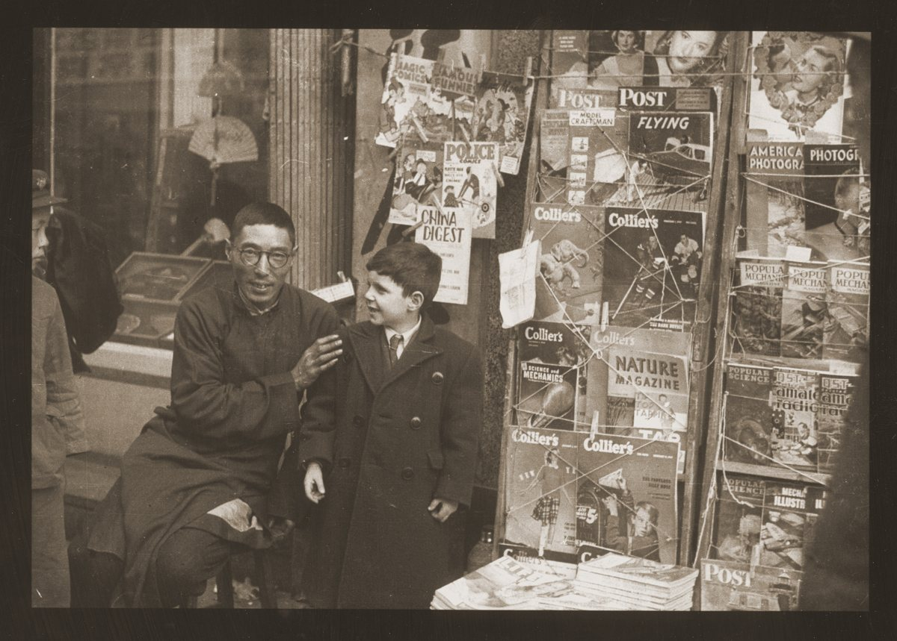
3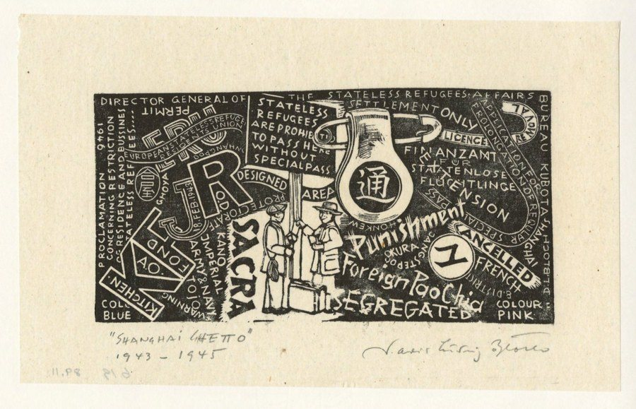
4 5
5 5
5A conceptual exhibition layout — archival prints grouped by section, with interpretive text around them. Tap any print to enlarge it with its full caption and archive credit; tap a numbered room to lift its prints.
The script that came out of it — Little Vienna, Act I
The research became a screenplay.
"The city wakes in layers."Little Vienna, Act I — Exile and Arrival (1933–1939)
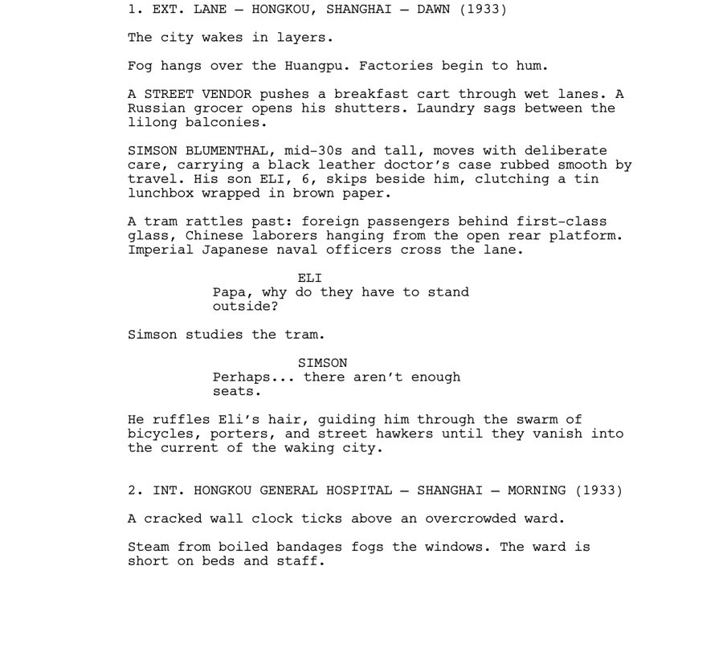
From my screenplay Little Vienna, Act I — the opening pages.
Signal's Universe
animated opera in development · with Genie DeezSignal's Universe: The First Song is an animated space opera where sound is power — and, underneath that, an art project about cultural preservation by adaptation. Signal, a half-Chinese, half-Black music prodigy at an elite space academy, risks everything to hear her missing father's last transmission. Every world in it is built from a real, endangered language and music — carried across into something new, not sealed behind glass.
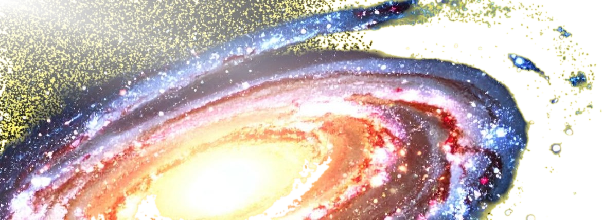
What does cultural preservation mean when the thing is already "preserved"?
I approach preservation through performance: what changes when archival writing becomes a newly composed song? With the Steinhaus/Zisson Graduate Research Grant at Brown's Pembroke Center, I developed the project Reviving Nüshu: Women's Script as Modern Song, translating its glyphs, melodies and meanings into an original song, co-written and recorded with Genie, and premiered it at a listening event at Brown. The question underneath it — how can art translate linguistic disappearance into sonic presence? — is the one Signal's Universe is built on. Here, adaptation becomes a way to bring archival material into a new performance. Moving a thing across — one tongue, one body, one era to the next — is not only my subject here; it is the operation. Translation as an act of care.
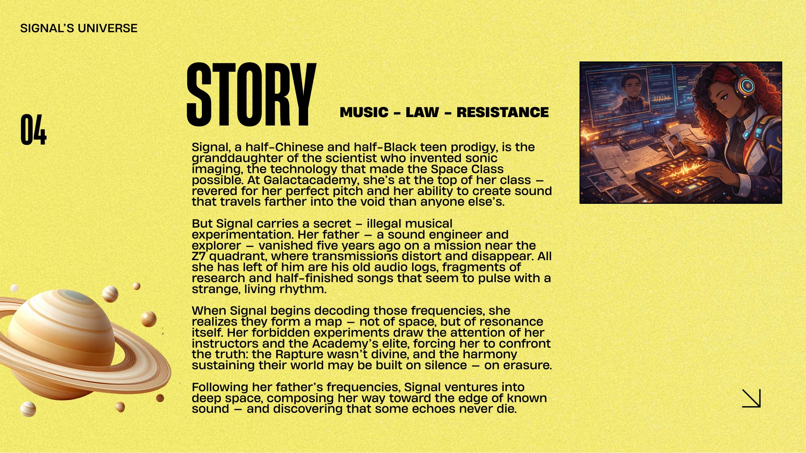
▸ the worlds Signal is built from — each a living language and its music
The Academy — a space school
The conservatory at the centre of the map: an elite music academy in orbit where Signal trains, and where every world's language and frequency collides.
Talking Drum
West African talking drum — pitch as speech. A crash-landing world of polyrhythm, where the drum carries words across distance.
Silent People
A region where sound carries memory — and silence is exile.
Kendrick × Western orchestra
Classical orchestration remixed with hip-hop, Nüshu and talking drum — one score, many tongues.
女书 · Nüshu
Nüshu is the only script in the world made and used only by women — a syllabic writing the women of Jiangyong, Hunan invented for themselves because they were kept from literacy, passed hand to hand on fans and handkerchiefs, beneath official notice. A record kept by people who were never meant to be keeping one. In Signal's Universe it becomes the language of the Moon People: the script that sings, that the whole map resolves into.
the characters, defined — six words
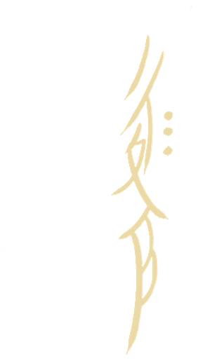
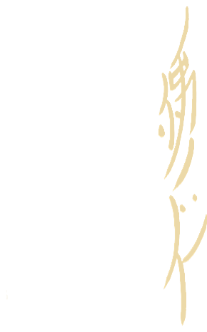
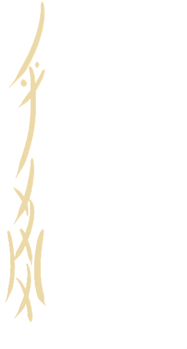
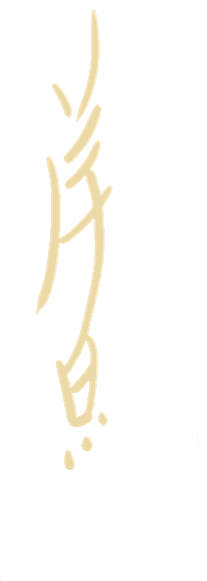
and the sentences — written in Nüshu, then Chinese, then English
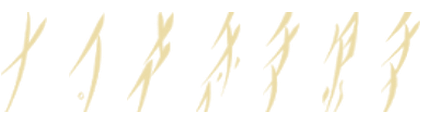
思考是我的抵抗I think, I resist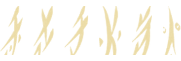
我即旷野之星I am the star of the wildernessThe music is classic Western orchestration with a multicultural twist — the way Bridgerton remixes pop into strings, Signal's Universe braids Kendrick Lamar, Chinese Nüshu and the West African talking drum into one score. My translation work runs underneath all of it — Chinese film into English, queer Chinese poetry its own canon was not built to keep — because carrying something across without flattening it is the whole art.
Artist biography
Eden Z. Jianpei is a Hong Kong–born multidisciplinary artist working across film, performance and translation. Her absurdist comedy explores god and sin in relation to technology by studying the physical and spiritual instability of the body — gods that won't answer, bodies that won't behave.
She assembles films from borrowed material — appropriated archive, double exposure, videogame interfaces — leaving the seams of construction visible, and dropping a tiny composited version of herself into the frame as a recurring signature.
Raised across diplomatic communities, she has lived in some seventy countries; the longest she stayed anywhere was three years in South Bend, Indiana. She holds an MA from Brown University (2026) and a BA from the University of Notre Dame. Her short documentary After the Race was nominated for a NATAS Chicago/Midwest College Student Production Award (2024); her films have screened in official competition at the Flickers' Rhode Island International Film Festival and across the experimental circuit.
Her translation work spans a queer literary anthology and the subtitle and dub translation for the North American distribution of Wukong Warrior, and her research on Jewish refugees in Shanghai during WWII became the exhibition The Paper Haven. Her films are produced under Ribcage Pictures, which also publishes Forty Episodes, her licensing atlas for Chinese drama. She is developing Signal's Universe, an animated series rooted in musicology, and performs stand-up at Flappers in Los Angeles and Rooster in the Bay Area.
Eden Z. Jianpei is the artist name of Joyce Fu.